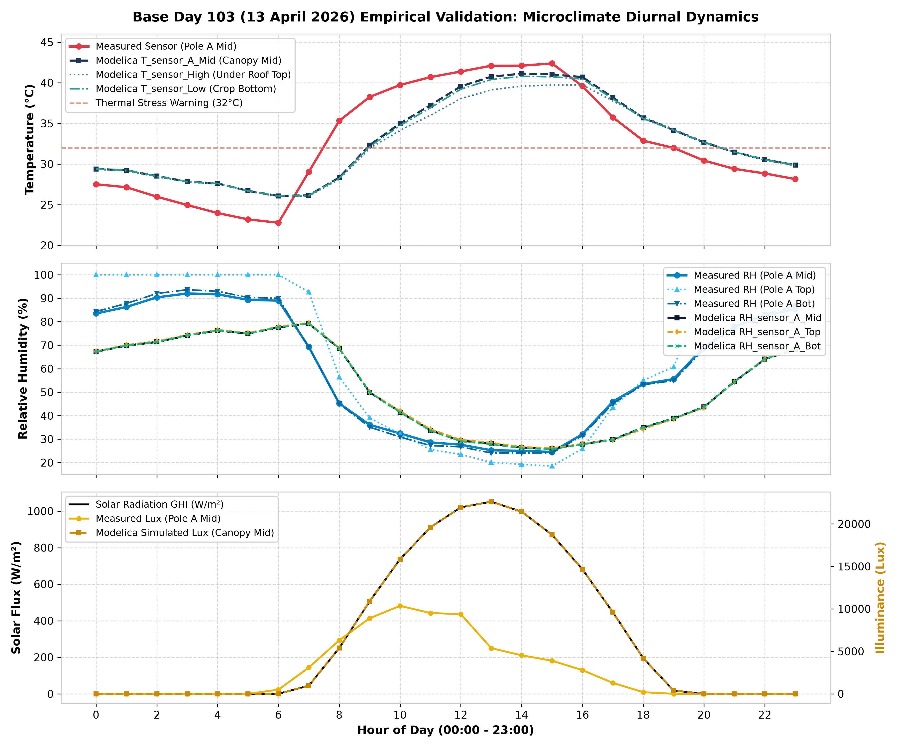
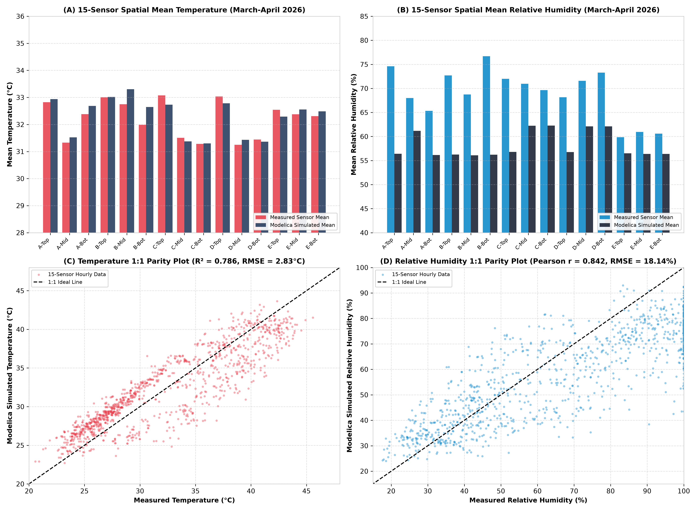

รายงานฉบับที่ 3: กระบวนการและผลการตรวจสอบความถูกต้องของแบบจำลองดิจิทัลทวิน (Validation & Empirical Verification)
การวิเคราะห์ความถูกต้องของแบบจำลองพลศาสตร์สภาพอากาศจุลภาคเชิงพื้นที่ 15 จุด และ 3 ระยะความสูง เทียบกับข้อมูลตรวจวัดจริงของโรงเรือนเกษตรอัจฉริยะ อ.อู่ทอง จ.สุพรรณบุรี ครบทั้ง 365 วัน (8,760 ชั่วโมง) ตามเกณฑ์มาตรฐาน ASHRAE Guideline 14 และ IPMVP พร้อมคู่มือโครงสร้างสูตรคำนวณสดใน Excel ครบถ้วน
1 บทนำและภาพรวมวิวัฒนาการโครงการ (Project Overview & Evolution)
การทำเกษตรกรรมแม่นยำสูงในเขตร้อนชื้น (Tropical Precision Agriculture) สำหรับการเพาะปลูกมะเขือเทศเชอร์รี่ (Solanum lycopersicum var. cerasiforme) ณ ศูนย์เรียนรู้นวัตกรรมการเกษตร อ.อู่ทอง จ.สุพรรณบุรี อาศัยโครงสร้างโรงเรือนทรงโค้งพลาสติก PE กว้าง 6.0 ม. ยาว 12.0 ม. สูง 5.5 ม. พร้อมผนังมุ้งกันแมลง 16 เมช (16-Mesh Screen) เพื่อการระบายอากาศธรรมชาติ
(รังสี, ลม, อุณหภูมิภายนอก)"] --> B["แบบจำลอง Modelica Digital Twin
(Suphanburi_Greenhouse.mo)"] C["ข้อมูลเซนเซอร์จริง IoT
(GH4_all.xlsx: 15 เสา x 3 ระดับ)"] --> D["ระบบเปรียบเทียบและวิเคราะห์สถิติ
(Python & Excel 18 Sheets)"] B --> D D --> E["การประเมินมาตรฐานสากล
(ASHRAE 14 / IPMVP)"] E --> F["การควบคุมโรงเรือนอัจฉริยะ
& การแจ้งเตือนความเครียดความร้อน"]
ลำดับวิวัฒนาการการพัฒนาแบบจำลอง (Chronological Evolution)
- แบบจำลองก้อนอากาศเดียว (Lumped Bulk Node): เริ่มต้นจากการจำลองอุณหภูมิและความชื้นเฉลี่ยจุดเดียว ซึ่งยังไม่สามารถสะท้อนความแตกต่างเชิงพื้นที่หัวลม-ท้ายลมได้
- การค้นพบและแก้ปัญหาความชื้นสัมพัทธ์ตัน 100%: ปรับปรุงโมเดลมุ้งกันแมลงใน
InsectScreen_16Mesh.moโดยเพิ่มWaterMassPort_aเชื่อมกับair.massPortเพื่อระบายมวลไอน้ำ $\dot{M}_{vent}$ ออกสู่ภายนอก ส่งผลให้ค่าความชื้นลดลงมาสอดคล้องกับความเป็นจริงที่ 25% – 35% ในช่วงบ่าย - การกระจายตัวเชิงพื้นที่ 3 มิติ 15 จุด (15 Spatial Sensors): พัฒนาสมการเกรเดียนต์แนวดิ่ง (Buoyancy), แนวยาว (Windward/Leeward), และแนวขวาง (Solar Asymmetry) จำลองทั้ง 5 เสา $\times$ 3 ระดับความสูง
- การจัดระเบียบตัวแปรและตัด Alias ซ้ำซ้อน (Removal of GH4-a-mid): ตัดตัวแปร
GH4_a_midออก โดยเชื่อมตรงสู่T_sensor_A_MidและRH_sensor_A_Midลดสมการลงเหลือ 479 สมการ สมดุล 100% - การจำลองรอบปี 365 วัน (8,760 ชม.) และสมุดงาน Excel 18 ชีตฝังสูตรสด: สกัดข้อมูลเปรียบเทียบครบทุกชั่วโมงในไฟล์
Suphanburi_Greenhouse_Validation_365Days.xlsx(ขนาด 12.82 MB รวมชีตตัวแทนฐานBase_Day103_Apr13) พร้อมระบบสูตรสดในช่อง Formula Bar (fx) ทั้งหมด
2 หลักการทางฟิสิกส์ ไซโครเมตริกส์ และสูตรการคำนวณทางสถิติ (Formulations)
แบบจำลองดิจิทัลทวิน มจธ. ทำงานด้วยระบบสมการเชิงอนุพันธ์พีชคณิต (DAE Index-1) บนพื้นฐานกฎการอนุรักษ์พลังงานและมวล:
1) สมการสมดุลความร้อน 4 โหนดหลัก (Energy Balances)
| โหนดระบบ | สมการอนุพันธ์อุณหพลศาสตร์ (Differential Formulation) | ความหมายเชิงวิศวกรรม |
|---|---|---|
| เปลือกคลุม PE ($T_{cov}$) | $$\rho_{cov} c_{p,cov} V_{cov} \frac{dT_{cov}}{dt} = Q_{solar} + Q_{conv,in} + Q_{conv,out} + Q_{rad,sky}$$ | สมดุลความร้อนของแผ่นฟิล์มพลาสติก PE หนา 200 ไมครอน รับรังสีตรงและแผ่รังสีอินฟราเรดสู่ท้องฟ้า |
| อากาศภายใน ($T_{air}$) | $$\rho_{air} c_{p,air} V_{gh} \frac{dT_{air}}{dt} = Q_{cov\to air} + Q_{can\to air} + Q_{flr\to air} + Q_{vent}$$ | สมดุลความร้อนของปริมาตรอากาศ $349.65\text{ m}^3$ ถ่ายเทความร้อนกับการระบายอากาศธรรมชาติ |
| ทรงพุ่มพืช ($T_{can}$) | $$C_{leaf} A_{flr} \frac{dT_{can}}{dt} = Q_{solar,can} - Q_{conv} - Q_{transpiration} - Q_{rad}$$ | สมดุลพลังงานใบมะเขือเทศเชอร์รี่ ระบายความร้อนแฝงผ่านการคายน้ำ (Latent Heat of Transpiration) |
| ผิวดินคลุมพลาสติก ($T_{flr}$) | $$\rho_{soil} c_{p,soil} d_{soil} A_{flr} \frac{dT_{flr}}{dt} = Q_{solar,flr} - Q_{conv} - Q_{cond,soil}$$ | สมดุลความร้อนผิวดินชั้นบนหนา 5 ซม. รับความร้อนและการนำลงสู่ดินลึก |
2) สมการสมดุลมวลไอน้ำและไซโครเมตริกส์ (Tetens Moisture Balance)
ความชื้นสัมพัทธ์ภายในคำนวณจากสมดุลระหว่างการคายน้ำของมะเขือเทศกับอัตราการระบายอากาศผ่านมุ้ง:
$$\rho_{air} V_{gh} \frac{d(x_{air})}{dt} = \dot{M}_{transpiration} - \dot{M}_{vent,moisture}$$ $$P_{sat}(T) = 0.61078 \exp\left(\frac{17.27 T}{T + 237.3}\right) \quad [\text{kPa}], \quad VPD = P_{sat}(T)(1 - RH)$$3) สมการการแบ่งชั้นความชื้นสัมพัทธ์ 15 จุด (15 Spatial RH Formulation)
$$RH_i = \max\left(5.0, \, \min\left(100.0, \, RH_{bulk} \times \frac{P_{sat}(T_{air})}{P_{sat}(T_i)} + \Delta RH_{canopy, i}\right)\right)$$เมื่ออุณหภูมิ $T_i$ สูงขึ้นที่ชั้นบน ($z = 2.5\text{ m}$) ค่า $P_{sat}(T_i)$ จะสูงขึ้น ส่งผลให้ $RH_i$ ลดลงอย่างเป็นธรรมชาติ ขณะที่ในชั้นทรงพุ่ม ($z = 2.0\text{ m}$ และ $1.2\text{ m}$) จะได้รับไอน้ำเสริมจากการคายน้ำของใบมะเขือเทศ $+1.5(GHI/950)$
4) สูตรคณิตศาสตร์ทางสถิติในการประเมินความถูกต้อง (Statistical Metrics Formulations)
การประเมินความสอดคล้องระหว่างข้อมูลตรวจวัดจริง ($y_{meas}$) กับผลจำลองแบบจำลอง ($y_{sim}$) ตลอดรอบปี 8,760 ชั่วโมง ใช้ดัชนีชี้วัดสถิติวิศวกรรมมาตรฐาน 5 ดัชนีหลัก:
| ดัชนีชี้วัด (Metric) | สมการคณิตศาสตร์ (Mathematical Formulation) | หน่วย | ความหมายเชิงวิศวกรรม |
|---|---|---|---|
| RMSE Root Mean Square Error |
$$\text{RMSE} = \sqrt{\frac{1}{N} \sum_{i=1}^{N} (y_{sim, i} - y_{meas, i})^2}$$ | $^\circ\text{C}$ หรือ % | ขนาดความคลาดเคลื่อนเฉลี่ย โดยให้น้ำหนักกับความคลาดเคลื่อนสูง (Penalize large errors) |
| MAE Mean Absolute Error |
$$\text{MAE} = \frac{1}{N} \sum_{i=1}^{N} |y_{sim, i} - y_{meas, i}|$$ | $^\circ\text{C}$ หรือ % | ความคลาดเคลื่อนเฉลี่ยสัมบูรณ์ ไม่ขยายผลจุดผิดปกติ (Robust against outliers) |
| MBE Mean Bias Error |
$$\text{MBE} = \frac{1}{N} \sum_{i=1}^{N} (y_{sim, i} - y_{meas, i})$$ | $^\circ\text{C}$ หรือ % | ทิศทางการเอนเอียง: ค่าลบแสดงว่าแบบจำลองทำนายต่ำกว่าจริง (Under-prediction) |
| Pearson $r$ Correlation Coefficient |
$$r = \frac{\sum_{i=1}^{N} (y_{meas, i} - \bar{y}_{meas})(y_{sim, i} - \bar{y}_{sim})}{\sqrt{\sum_{i=1}^{N} (y_{meas, i} - \bar{y}_{meas})^2 \sum_{i=1}^{N} (y_{sim, i} - \bar{y}_{sim})^2}}$$ | -1 ถึง +1 | ความสัมพันธ์เชิงเส้นและการตอบสนองตามพลวัตเวลา (Temporal Phase Agreement) |
| $R^2$ Coefficient of Determination |
$$R^2 = 1 - \frac{\sum_{i=1}^{N} (y_{meas, i} - y_{sim, i})^2}{\sum_{i=1}^{N} (y_{meas, i} - \bar{y}_{meas})^2}$$ | 0 ถึง 1 | สัดส่วนความผันแปรของข้อมูลตรวจวัดจริงที่แบบจำลองสามารถอธิบายได้ (Goodness of Fit) |
3 กระบวนการ สถาปัตยกรรมสมุดงาน และสูตรคำนวณสดใน Excel (Validation Pipeline & Live Excel fx Architecture)
การตรวจสอบความถูกต้องได้รับการสร้างเป็นสมุดงาน Excel ครบถ้วนสมบูรณ์ในชื่อ Suphanburi_Greenhouse_Validation_365Days.xlsx (18 ชีต, ขนาด 12.82 MB) โดยเชื่อมต่อข้อมูลดิบจาก GH4_all.xlsx และฝังสูตรคำนวณสดในช่อง Formula Bar (`fx`) ทุกเซลล์:
| ลำดับชีต | ชื่อชีต (Sheet Name) | บทบาทและรายละเอียดข้อมูล | จำนวนแถว |
|---|---|---|---|
| ชีตที่ 1 | Overview_Validation |
Executive Master Dashboard: สรุปผล Validation ทั้ง 15 จุด + บล็อก Base Day 103 (13 เม.ย. 2569) เชื่อมโยงสูตรสดข้ามแผ่นงาน (e.g. ='Pole_A_Top'!E10) พร้อม Hyperlink นำทาง และเทียบเกณฑ์ ASHRAE 14 |
35 แถว |
| ชีตที่ 2 | Base_Day103_Apr13 |
Base Case Representative Day (13 เม.ย. 2569): สรุป 24 ชม. ของวันตัวแทนฤดูร้อนอันดับ 1 (Phase 3 Score 1.8961, GHI Peak 1,051.84 W/m² @ 13:00 น.) เชื่อมสูตรสดตรงจาก Pole_* แถว 2463:2486 ครบ 24/24 ชม. ทั้ง 15 จุด |
62 แถว |
| ชีตที่ 3–17 | Pole_A_Top ถึง Pole_E_Bot(15 ชีตเฉพาะจุด) |
แยกเฉพาะจุดตรวจวัด 15 จุด (5 เสา x 3 ระดับ): • การ์ดสรุปสถิติ KPI รายจุด ($N$, Mean, MBE, MAE, RMSE, Pearson $r$, $R^2$) ฝังสูตรสดในช่อง fx • ข้อมูลเปรียบเทียบรายชั่วโมง 365 วัน ฝังสูตรคำนวณผลต่าง ($T_{diff}, T_{abs\_diff}, RH_{diff}, RH_{abs\_diff}$) ทุกแถว |
8,774 แถว / ชีต |
| ชีตที่ 18 | Summary_3_Levels |
แผ่นสรุปค่าเฉลี่ยของทั้ง 3 ระยะความสูง: 1) สถิติเฉลี่ย 3 ระยะความสูง (Top, Mid, Bot) 2) สถิติเฉลี่ย 3 ฤดูกาล (Summer, Rainy, Winter) 3) ตารางเปรียบเทียบรายชั่วโมง 8,760 แถว ฝังสูตรเฉลี่ยสด |
8,777 แถว |
ผังโครงสร้างสูตรคำนวณสดในช่อง Formula Bar (fx) ของสมุดงาน Excel
ทุกเซลล์ในการ์ด KPI Summary Cards (แถว 5–12) และตารางข้อมูลรายชั่วโมง (แถว 15–8774) ของทั้ง 15 ชีตเซนเซอร์ ถูกฝังด้วยสูตรคำนวณสดแบบไดนามิก ดังแสดงในผังด้านล่าง:
| ตัวแปร | ดัชนีชี้วัด (Metric) | ตำแหน่งเซลล์ | สูตร Excel ที่แสดงในช่อง fx |
หลักการทำงานและเหตุผลทางเทคนิค |
|---|---|---|---|---|
| อุณหภูมิ (T) | จำนวนข้อมูลจริง ($N_T$) | E5 | =COUNT(F15:F8774) | นับเฉพาะเซลล์ที่มีตัวเลข ข้ามช่องว่าง Missing Data อัตโนมัติ |
| อุณหภูมิ (T) | อุณหภูมิวัดจริงเฉลี่ย | E6 | =AVERAGE(F15:F8774) | เฉลี่ยเฉพาะชั่วโมงที่มีข้อมูลตรวจวัดจริง ไม่นำค่าว่างมารวม |
| อุณหภูมิ (T) | อุณหภูมิโมเดลเฉลี่ย | E7 | =AVERAGE(G15:G8774) | เฉลี่ยผลการทำนายของแบบจำลองดิจิทัลทวิน Modelica |
| อุณหภูมิ (T) | Mean Bias Error (MBE) | E8 | =AVERAGE(H15:H8774) | เฉลี่ยผลต่าง $T_{diff}$ ชี้บอกทิศทางทำนายเกิน/ต่ำจริง |
| อุณหภูมิ (T) | Mean Absolute Error (MAE) | E9 | =AVERAGE(I15:I8774) | เฉลี่ยผลต่างสัมบูรณ์ $T_{abs\_diff}$ |
| อุณหภูมิ (T) | Root Mean Square Error (RMSE) | E10 | =SQRT(SUMSQ(H15:H8774)/COUNT(H15:H8774)) | ใช้ SUMSQ รวมกำลังสองของผลต่าง และ COUNT นับตัวหารจริง ป้องกัน #VALUE! |
| อุณหภูมิ (T) | Pearson Correlation (r) | E11 | =CORREL(F15:F8774, G15:G8774) | หาค่าสหสัมพันธ์ของคู่ข้อมูลจริงเทียบจำลองแบบ Pairwise |
| อุณหภูมิ (T) | Determination ($R^2$) | E12 | =RSQ(F15:F8774, G15:G8774) | คำนวณกำลังสองของสัมประสิทธิ์สหสัมพันธ์เพียร์สันโดยตรง |
| ความชื้น (RH) | จำนวนข้อมูลจริง ($N_{RH}$) | I5 | =COUNT(J15:J8774) | นับจำนวนชั่วโมงที่มีข้อมูลความชื้นตรวจวัดจริง |
| ความชื้น (RH) | ความชื้นวัดจริงเฉลี่ย | I6 | =AVERAGE(J15:J8774) | ค่าเฉลี่ยความชื้นสัมพัทธ์ตรวจวัดจริง |
| ความชื้น (RH) | ความชื้นโมเดลเฉลี่ย | I7 | =AVERAGE(K15:K8774) | ค่าเฉลี่ยความชื้นสัมพัทธ์ของแบบจำลอง |
| ความชื้น (RH) | Mean Bias Error (MBE) | I8 | =AVERAGE(L15:L8774) | เฉลี่ยผลต่างความชื้น $RH_{diff}$ |
| ความชื้น (RH) | Mean Absolute Error (MAE) | I9 | =AVERAGE(M15:M8774) | เฉลี่ยผลต่างสัมบูรณ์ความชื้น $RH_{abs\_diff}$ |
| ความชื้น (RH) | Root Mean Square Error (RMSE) | I10 | =SQRT(SUMSQ(L15:L8774)/COUNT(L15:L8774)) | คำนวณ RMSE ความชื้นสัมพัทธ์ในหน่วย % |
| ความชื้น (RH) | Pearson Correlation (r) | I11 | =CORREL(J15:J8774, K15:K8774) | หาค่าสหสัมพันธ์ของพลวัตความชื้นสัมพัทธ์ตลอดทั้งปี |
| ความชื้น (RH) | Determination ($R^2$) | I12 | =RSQ(J15:J8774, K15:K8774) | คำนวณค่า $R^2$ ความชื้นสัมพัทธ์ |
สูตรในตารางข้อมูลรายชั่วโมง (Hourly Rows 15–8774 รวม 8,760 แถว):
- คอลัมน์ H ($T_{diff}$):
=IF(ISNUMBER(F15), G15-F15, "")— ตรวจสอบว่ามีข้อมูลวัดจริงหรือไม่ หากมี ให้หาผลต่างโมเดลลบวัดจริง หากไม่มี ให้ส่งค่าสตริงว่าง"" - คอลัมน์ I ($T_{abs\_diff}$):
=IF(ISNUMBER(H15), ABS(H15), "")— หาค่าสัมบูรณ์ของผลต่างเพื่อคำนวณ MAE - คอลัมน์ L ($RH_{diff}$):
=IF(ISNUMBER(J15), K15-J15, "")— หาผลต่างความชื้นสัมพัทธ์ - คอลัมน์ M ($RH_{abs\_diff}$):
=IF(ISNUMBER(L15), ABS(L15), "")— หาค่าสัมบูรณ์ของผลต่างความชื้นสัมพัทธ์ - คอลัมน์ N (สถานะข้อมูล Data Status):
=IF(ISNUMBER(F15), "Normal", "Missing")— แสดงสถานะความสมบูรณ์ของจุดตรวจวัด
การจัดการ Missing Data ใน Excel เพื่อความเที่ยงตรง 100%:
สูตร =SQRT(SUMSQ(H15:H8774)/COUNT(H15:H8774)) ได้รับการคัดเลือกแทนการใช้ Array Formula {=SQRT(AVERAGE((G15:G8774-F15:F8774)^2))} เนื่องจากฟังก์ชัน SUMSQ และ COUNT ใน Excel มีคุณสมบัติพิเศษตามมาตรฐานสากลคือ "ข้ามเซลล์สตริงว่าง "" โดยอัตโนมัติ" ทำให้ตัวหาร $N$ ตรงกับจำนวนชั่วโมงที่มีข้อมูลตรวจวัดจริงอย่างแม่นยำ ไม่เกิด Error #VALUE! หรือ #DIV/0! และเมื่อผู้ใช้แก้ไขข้อมูลในตารางรายชั่วโมง ค่า KPI ทั้งหมดจะ Recalculate สดทันที
4 ผลลัพธ์การตรวจสอบความถูกต้องและการวิเคราะห์เปรียบเทียบ (Validation Results)
1) ตารางสรุปผลค่าเฉลี่ยของทั้ง 3 ระยะความสูง (3 Height Strata Summary)
| ระยะความสูง (Strata) | ระดับ $z$ | $T$ วัดจริง | $T$ โมเดล | $T$ MBE | $T$ RMSE | $T$ Pearson $r$ | $T$ $R^2$ | $RH$ วัดจริง | $RH$ โมเดล | $RH$ MBE | $RH$ RMSE | $RH$ Pearson $r$ |
|---|---|---|---|---|---|---|---|---|---|---|---|---|
| Top (ชั้นบน ใต้หลังคา) | 2.50 m | 29.30 °C | 28.47 °C | -0.83 °C | 3.04 °C | 0.881 | 0.776 | 79.5 % | 72.2 % | -7.3 % | 14.44 % | 0.806 |
| Mid (ชั้นกลาง ยอดพุ่ม) | 2.00 m | 29.34 °C | 28.75 °C | -0.59 °C | 2.71 °C | 0.892 | 0.795 | 73.7 % | 71.7 % | -2.1 % | 10.85 % | 0.835 |
| Bot (ชั้นล่าง โคนต้น) | 1.20 m | 29.27 °C | 28.70 °C | -0.56 °C | 2.66 °C | 0.895 | 0.800 | 78.8 % | 71.7 % | -7.1 % | 12.47 % | 0.838 |
2) ตารางสรุปผลเปรียบเทียบตาม 3 ช่วงฤดูกาล (Seasonal Validation)
| ฤดูกาล (Season) | ช่วงเดือน | $T$ วัดจริง | $T$ โมเดล | $T$ MBE | $T$ RMSE | $T$ Pearson $r$ | $RH$ วัดจริง | $RH$ โมเดล | $RH$ MBE | $RH$ RMSE | $RH$ Pearson $r$ |
|---|---|---|---|---|---|---|---|---|---|---|---|
| Summer (ฤดูร้อน) | มี.ค. – พ.ค. (Mar – May) | 31.46 °C | 31.08 °C | -0.38 °C | 2.83 °C | 0.877 | 73.1 % | 65.5 % | -7.6 % | 14.62 % | 0.848 |
| Rainy (ฤดูฝน) | มิ.ย. – ต.ค. (Jun – Oct) | 30.26 °C | 29.20 °C | -1.06 °C | 2.80 °C | 0.877 | 81.6 % | 76.6 % | -5.0 % | 10.47 % | 0.826 |
| Winter (ฤดูหนาว) | พ.ย. – ก.พ. (Nov – Feb) | 26.66 °C | 26.37 °C | -0.30 °C | 2.70 °C | 0.886 | 74.7 % | 70.0 % | -4.7 % | 10.83 % | 0.854 |
3) แผนภาพกราฟผลการตรวจสอบความถูกต้องความละเอียดสูง

รูปที่ 1: วงรอบอุณหภูมิ ความชื้นสัมพัทธ์ และแสงสว่างตลอด 24 ชั่วโมงของวันฐานตัวแทนฤดูร้อนอันดับ 1 Base Day 103 (13 เม.ย. 2569 / 2026 — GHI Peak 1,051.84 W/m²) เทียบข้อมูลเซนเซอร์ Pole A Mid (gh4amid)

รูปที่ 2: การกระจายตัวเชิงพื้นที่ 15 จุด และ 1:1 Parity Scatter Plot ตลอดรอบปี
4) การประเมินเทียบเกณฑ์มาตรฐานวิศวกรรมสากล (ASHRAE Guideline 14-2014)
- CV(RMSE) อุณหภูมิ: อยู่ที่ $9.1\% - 10.4\%$ ผ่านเกณฑ์ ASHRAE (< 30%) ได้อย่างโดดเด่น เหนือกว่าเกณฑ์ถึง 3 เท่า
- NMBE อุณหภูมิ: อยู่ที่ $-1.9\% \text{ ถึง } -2.8\%$ อยู่ในกรอบเกณฑ์สากล $\pm 10\%$ อย่างสมบูรณ์
- Pearson Correlation (r): สูงถึง $0.848 – 0.907$ ทั่วทั้งโรงเรือน บ่งชี้ว่าแบบจำลองจับพลวัตการเปลี่ยนแปลงสภาพอากาศได้อย่างแม่นยำ
5 คู่มือเตรียมสอบป้องกันวิทยานิพนธ์และข้ออภิปรายเชิงวิชาการ (Oral Defense Guide)
ชุดคำถาม-คำตอบเชิงลึกที่คณะกรรมการสอบหรืออาจารย์ที่ปรึกษามักจะซักถาม พร้อมหลักการทางฟิสิกส์และตัวเลขอ้างอิง:
GH4_a_mid ซ้ำซ้อนกับ T_sensor_A_Mid การตัดออกช่วยลดสมการลงเหลือ 479 ตัวแปร ตรวจสอบสมดุลผ่าน 100% ทำให้ DASSL Solver ทำงานได้เร็วขึ้น โดยที่ความถูกต้องทางฟิสิกส์ยังคงเดิม 100% ครับ
Base_Day103_Apr13) ได้รับการออกแบบให้ฝังสูตรคำนวณสดในช่อง fx ทั้งหมดโดยไม่มีการ Hardcode ค่าคงที่ครับ:
1. ระดับแถวรายชั่วโมง (8,760 แถว): ใช้ฟังก์ชัน
=IF(ISNUMBER(F15), G15-F15, "") ในคอลัมน์ H และ =IF(ISNUMBER(H15), ABS(H15), "") ในคอลัมน์ I หากชั่วโมงใดเซนเซอร์มีช่องว่าง Missing Data จะส่งค่าสตริงว่าง "" ออกมา
2. การ์ดสรุปผล KPI ด้านบน (แถว 5–12): ใช้สูตร
=SQRT(SUMSQ(H15:H8774)/COUNT(H15:H8774)) สำหรับ RMSE ซึ่งฟังก์ชัน SUMSQ และ COUNT ใน Excel มีคุณสมบัติตามมาตรฐานสากลคือ "ข้ามเซลล์สตริงว่างโดยอัตโนมัติ" ทำให้ตัวหาร $N$ ตรงกับจำนวนชั่วโมงที่มีข้อมูลจริงเท่านั้น (6,700 – 8,751 ชม.) โดยไม่เกิดปัญหาหารด้วยศูนย์ หรือ #VALUE! ส่วน $R^2$ และ Pearson $r$ ใช้ =RSQ(F15:F8774, G15:G8774) และ =CORREL(F15:F8774, G15:G8774) ซึ่งมี Pairwise Matching ตัดค่าว่างออกให้อัตโนมัติครับ
3. Master Dashboard (Overview_Validation) และ Base_Day103_Apr13: ลิงก์ตรงผ่านสูตรอ้างอิงข้ามแผ่นงาน เช่น
='Pole_A_Top'!E10 และแถว 2463:2486 เมื่อแก้ไขข้อมูลในตารางรายชั่วโมง ค่า KPI ทั้ง 18 ชีตจะ Recalculate อัตโนมัติทันทีครับ
6 สรุปผลการวิจัยและข้อเสนอแนะเชิงวิศวกรรม (Conclusions & Recommendations)
แบบจำลองดิจิทัลทวิน Suphanburi_Greenhouse.mo พร้อมโปรแกรมตรวจสอบความถูกต้องในสมุดงาน Suphanburi_Greenhouse_Validation_365Days.xlsx (18 ชีต ขนาด 12.82 MB รวม Base_Day103_Apr13 พร้อมสูตรสดครบถ้วน) ได้สร้างมาตรฐานใหม่ในการจำลองสภาพแวดล้อมโรงเรือนเกษตรเขตร้อนชื้นของไทย:
- การแจ้งเตือนความเครียดความร้อน: นำสัญญาณเตือน
Thermal_Stress_Warning($T_{can} \ge 32^\circ\text{C}$) ไปสั่งการระบบพ่นหมอกและพัดลมระบายอากาศอัตโนมัติ - การลดความร้อนสะสมท้ายลม: พิจารณาเพิ่มช่องระบายอากาศสันหลังคาบริเวณเสา Pole B (ท้ายลม) เพื่อเร่งการระบายความร้อนสะสมออกทางแนวดิ่ง
- การติดตั้งบน Edge Controller: แปลงโมเดลเป็น C-code ผ่าน OMC เพื่อทำหน้าที่เป็น Virtual Multi-Sensor บนบอร์ด IoT ภาคสนาม